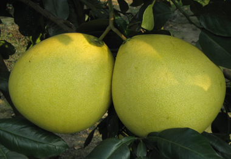

জাম্বুরার পরিচিতি
মৌসুমী ফলগুলোর মধ্যে অন্যতম হল জাম্বুরা। লেবু গোত্রের এই ফলটির আরেক নাম বাতাবী লেবু।
টক-মিষ্টি স্বাদের এই ফলটি আমাদের দেশে বেশ জনপ্রিয়। অন্যান্য লেবুর মতোই রসালো এই
ফলটি।
জাম্বুরার ইংরেজি নাম Pomelo। তবে কোথাও কোথাও একে Pummelo, Pommelo বা Shaddock নামেও
ডাকা হয়। জাম্বুরার বৈজ্ঞানিক নাম Citrus maxima বা Citrus grandis। বাংলাদেশের কোনো
কোনো অঞ্চলে জাম্বুরাকে 'বাদাম' নামেও ডাকা হয়!

জাম্বুরার আদি নিবাস দক্ষিণ-পূর্ব এশিয়া। বর্তমানে বিশ্বের অনেক দেশেই জাম্বুরার চাষ
হয়। জাম্বুরাগাছ মাঝারি আকারের কাষ্ঠল বৃক্ষ। পাতাগুলো গাঢ় সবুজ এবং লম্বাটে। গাছে
সাদা রঙের ফুল আসে এপ্রিলের প্রথম দিকে। ফুলে অত্যন্ত সুন্দর গন্ধ থাকে। মে মাসের শেষের
দিক থেকেই ফল পাকতে শুরু করে।
জাম্বুরা বলের মতো গোলাকৃতির ফল। কাঁচা ফলের রং সবুজ এবং পাকলে হলদেটে রং ধারণ করে।
পাতলা খোসার নিচে সাদা ফোমের মতো পুরু ও নরম একটা আস্তর থাকে। ফলের ভেতরে কমলার মতো
কোয়া থাকে। পাকা ফলের ভেতরটা সাদা, গোলাপি বা লাল রঙের হয়। একেকটি জাম্বুরার ওজন ১-২
কেজি পর্যন্ত হতে পারে।
জাম্বুরার পুষ্টি উপাদান
জাম্বুরা ফল হিসেবে যেমন চমত্কার তেমনি এর পুষ্টিগুণও ব্যাপক! জাম্বুরার প্রতি ১০০ গ্রাম খাদ্যযোগ্য অংশে রয়েছে - খাদ্যশক্তি- ৩৮ কিলোক্যালরি, শর্করা- ৯.৬ গ্রাম, খাদ্যআঁশ- ১ গ্রাম, চর্বি- ০.০ গ্রাম, আমিষ- ০.৭ গ্রাম, থায়ামিন- ০.০৩৪ মিলিগ্রাম, রিবোফ্লেভিন- ০.০২৭ মিলিগ্রাম, নিয়াসিন- .২২ মিলিগ্রাম, ভিটামিন বি৬- ০.০৩৬ মিলিগ্রাম, ভিটামিন সি- ৬১ মিলিগ্রাম, আয়রন- ০.১১ মিলিগ্রাম, ম্যাগনেসিয়াম- ৬ মিলিগ্রাম, ম্যাংগানিজ- ০.০১৭ মিলিগ্রাম, ফসফরাস- ১৭ মিলিগ্রাম, পটাশিয়াম- ২১৬ মিলিগ্রাম, সোডিয়াম- ১ মিলিগ্রাম, জিংক- ০.০৮ মিলিগ্রাম ।
জাম্বুরার উপকারীতা
রক্তনালির প্রদাহ কমাতে জাম্বুরার জুড়ি নেই! এতে রয়েছে প্রচুর পরিমাণে পটাশিয়াম। যা
হৃদরোগ ও স্ট্রোকের ঝুঁকি কমাতে সাহায্য করে।
এর ভিটামিন সি ও বি দাঁত, ত্বক ও চুলের সৌন্দর্য বজায় রাখতে সাহায্য করে।
জ্বর, মুখের ঘা ইত্যাদি সারাতে জাম্বুরা সাহায্য করে।
কোষ্ঠকাঠিন্য দূর করতে ও পাকস্থলীর রোগ প্রতিরোধে জাম্বুরা সহায়ক ভূমিকা পালন করে।